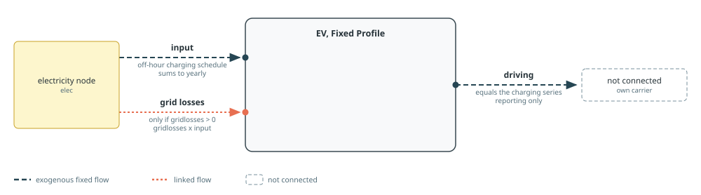
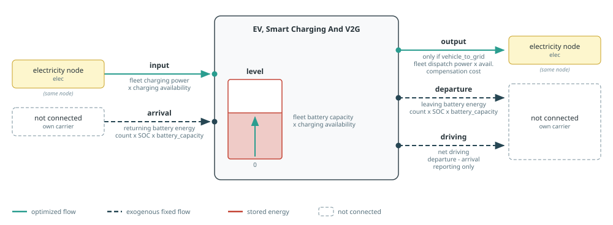

Electric Vehicles
makeEV creates fixed or flexible electric-vehicle demand. See Component Builders for shared naming, workbook, and port conventions, and Tags And Post-Processing for tagging and reporting. Each mode's diagram follows the conventions in Reading The Port Diagrams.
The EV API is not fixed yet. The modes, keyword arguments, component and port structure, and reporting semantics may change substantially in later Posy2 versions.
Exactly one of fixed_profile, smart_charging, and vehicle_to_grid must be true.
Fixed Profile
The fixed mode creates a conventional demand component. offhours1 and offhours2 give zero-based hours of day for the winter and summer patterns; minratio scales demand in those hours. days_threshold locates the boundary between the first winter segment and summer. The generated 365-day profile is normalised to the annual consumption yearly, so its hourly values always sum to yearly exactly. Off-hour indices must be unique, and a schedule leaving no charging hour at all (every hour an off-hour with minratio=0) is rejected.
This mode requires offhours1, offhours2, and minratio, but performs no workbook lookup. It can add the same proportional grid losses port as makedemand.

makeEV(
"EV", 50_000.0, electricity, snapshot;
fixed_profile=true,
smart_charging=false,
vehicle_to_grid=false,
offhours1=0:5,
offhours2=0:5,
minratio=0.2,
)Smart Charging And Vehicle To Grid
The flexible modes represent the connected vehicle fleet as storage. Both use these time-series columns for zone:
EV_charging_availabilitycontrols the available charging power and storage level;EV_driving_profileallocates annual driving consumption across the year.
Per-vehicle values come from the technology column named by techkey in the storage sheet: charging_eff, self_discharge, min_level_morning, max_charging_power, max_dispatch_power, battery_capacity, and yearly_consumption. Each has a corresponding keyword override. The fleet size is yearly divided by annual consumption per vehicle, and the per-vehicle limits are scaled by that size. max_dispatch_power is resolved only in vehicle-to-grid mode; smart charging does not require it.
In tech_mode=:arguments, charging efficiency defaults to one, self-discharge and the morning minimum to zero. Maximum charging power, battery capacity, and yearly consumption per vehicle remain structural and must be supplied; V2G additionally requires maximum dispatch power. In timeseries_mode=:arguments, omitted charging availability defaults to one, while the driving profile remains required.
Smart charging exposes a flexible input, a level, and a fixed unconnected driving output. Vehicle-to-grid mode also exposes output, limited by available dispatch power, and applies compensation as a variable output cost. The morning level constraint requires the connected fleet to hold at least min_level_morning of available battery capacity at 7 am each day.

Tags for all EV modes: :tech => cname, :zone => elec.name, and the function tags electricity, demand, and ev. Vehicle-to-grid mode also receives the function tag generation, so its discharge appears in production reporting.
EV profiles and level constraints currently use a 365-day, 8,760-hour convention. Use a full non-leap-year hourly mesh for these modes.
See the Electric Vehicles example for smart charging and vehicle-to-grid models using this builder.
Posy2.makeEV — Function
makeEV(cname::String, yearly::Real, elec::Node, s::Snapshot;
fixed_profile::Bool=true, smart_charging::Bool=false, vehicle_to_grid::Bool=false,
offhours1=nothing, offhours2=nothing, minratio=nothing, days_threshold::Integer=104,
zone::Union{Nothing,String}=nothing, techkey::String="EV",
compensation::Real=0., gridlosses=0.,
charging_availability=nothing, driving_profile=nothing,
charging_eff::Union{Nothing,Real}=nothing, self_discharge::Union{Nothing,Real}=nothing, min_level_morning::Union{Nothing,Real}=nothing,
max_charging_power_per_ev::Union{Nothing,Real}=nothing, max_dispatch_power_per_ev::Union{Nothing,Real}=nothing,
battery_capacity_per_ev::Union{Nothing,Real}=nothing, yearly_consumption_per_ev::Union{Nothing,Real}=nothing,
)Build, connect and return an EV component.
Arguments:
cname: Component name prefix.yearly: Yearly EV electricity consumption (MWh/year). Must be non-negative.elec: Electricity node to connect EV charging/discharging flows.s: Target snapshot where the EV component and behaviors are registered.fixed_profile: Enable fixed-profile EV demand mode (deterministic hourly charging profile).smart_charging: Enable flexible charging mode (charging only, no discharge to grid).vehicle_to_grid: Enable flexible charging + grid discharge (V2G) mode. Exactly one offixed_profile,smart_charging,vehicle_to_gridmust betrue.offhours1: Winter off-hour indices (0-23, no duplicates). Required whenfixed_profile=true; ignored otherwise.offhours2: Summer off-hour indices (0-23, no duplicates). Required whenfixed_profile=true; ignored otherwise.minratio: Relative charging level during off-hours (0 <= minratio <= 1). Required whenfixed_profile=true; ignored otherwise. The hourly profile is normalized so that it sums toyearly; a schedule that leaves no charging hour at all (every hour an off-hour withminratio=0) is rejected.days_threshold: Number of first winter days before summer segment in fixed-profile assembly (0 <= days_threshold <= 183, used only whenfixed_profile=true).zone: Zone key used to read omitted EV time series in:excelmode.charging_availability: Hourly charging-station availability vector or scalar, each value in[0, 1]. When omitted, read it from the workbook in:excelmode and use one in:argumentsmode.driving_profile: Hourly driving vector or scalar, nonnegative with a strictly positive sum. Ifnothing, read it from the configured time-series workbook.techkey: Technology column name in thestoragetech data sheet for EV parameters (used in flexible/V2G modes).compensation: V2G compensation in USD/MWh applied to EV discharge output in V2G mode (ignored in non-V2G modes).gridlosses: Optional proportional grid-loss linked flow on EV input in fixed_profile mode (0 <= gridlosses < 1).charging_eff: Charging efficiency in flexible/V2G modes (0 < charging_eff <= 1); defaults to one in:argumentsmode.self_discharge: Hourly self-discharge in flexible/V2G modes (0 <= self_discharge < 1); defaults to zero in:argumentsmode.min_level_morning: Minimum morning level ratio (0 <= min_level_morning <= 1); defaults to zero in:argumentsmode.max_charging_power_per_ev: Maximum charging power per vehicle (> 0), required explicitly in:argumentsmode.max_dispatch_power_per_ev: Maximum dispatch power per vehicle (>= 0), required explicitly for V2G in:argumentsmode and ignored otherwise.battery_capacity_per_ev: Battery capacity per vehicle (> 0), required explicitly in:argumentsmode.yearly_consumption_per_ev: Yearly consumption per vehicle (> 0), required explicitly in:argumentsmode.